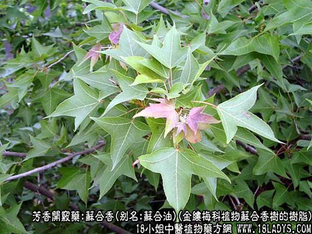
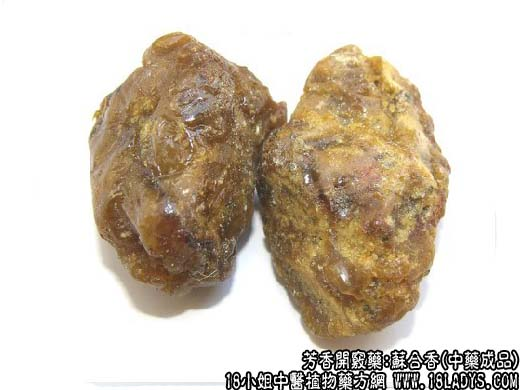
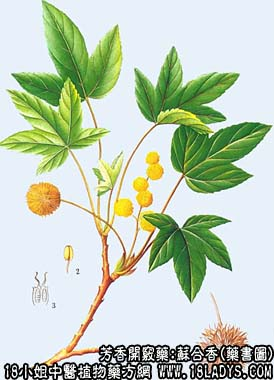

本品为少常用中药。始载《名医别录》，列为上品。原产苏合国（伊朗）故名。
别名：苏合油。
来源：为金缕梅科植物苏合香树的树脂。
产地：主产于土耳其、伊朗等国。
性状鉴别：本品呈粘稠膏状灰黄色或土黄色。挑之有粘丝，体重沉于水但不溶于水，用火点燃产生轻微爆裂声。气微香特异，味淡微辛。以质粘稠，气香浓者为佳。
主要成分：含大量桂皮酸，粗制品含游离桂皮酸约17%～23%，精制品含总香脂酸达47%，另含树脂约36%。
功效与作用：开窍、解郁、化痰，主要为兴奋中枢作用。
炮制：生用。
性味：甘、温。
归经：入心、脾经。
功能：开窍、祛痰。
主治：中风痰厥，惊痫等症。
临床应用：作中枢兴奋药用，与麝香相似，主要用于：
1、中风昏迷，痰壅气塞、牙关紧闭，属于寒闭者。
2、心腹猝痛，突然不省人事，近年来用于治疗急性心肌梗塞剧烈胸痛者，以苏河香丸口服止痛，有较好效果。
3、剧烈吐泻，或小儿剧烈吐乳。但本品对高热者昏厥者不宜用，以免助火。自汗虚弱者也不用，孕妇慎用。
用量：0.3～0.9g，入丸散用。
处方举例：苏合香丸（《局方》）：成药、含苏合香、冰片、乳香、丁香、沉香、麝香、安息香、犀角、朱砂、诃子、荜拔、白术等，每次1丸（3g），温开水送服。
注：本品有两种，上述品经测定含苏合油20%左右。另一种则为经提取苏合香油后的残渣，经测定含苏合香油不足1%，亦呈稠膏状，较上述品更粘稠些，黄棕色或灰棕色，此种因含苏合香油极少，现正在研究停止使用。